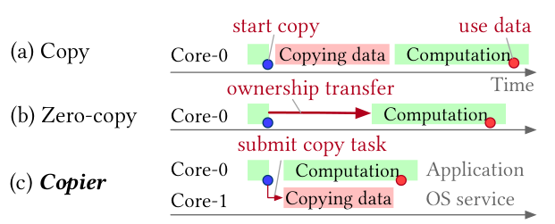
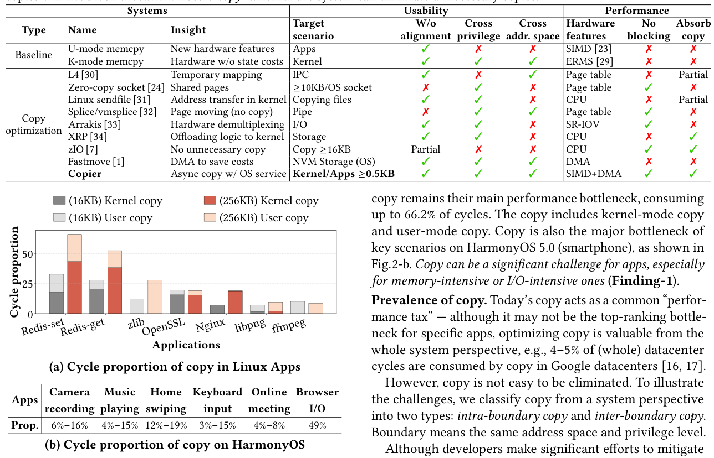
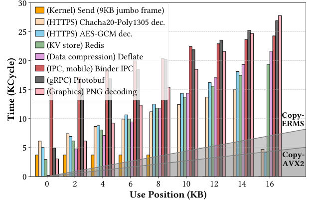
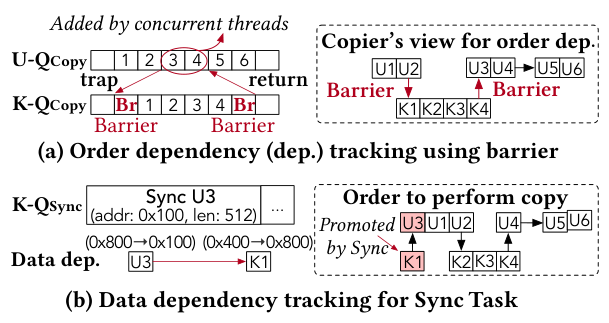
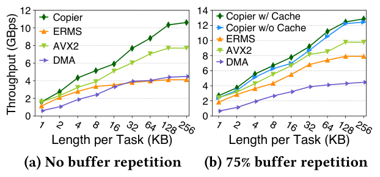
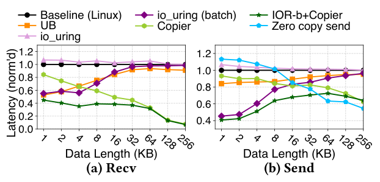
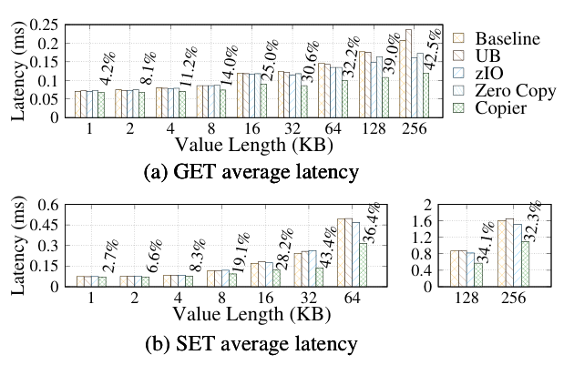
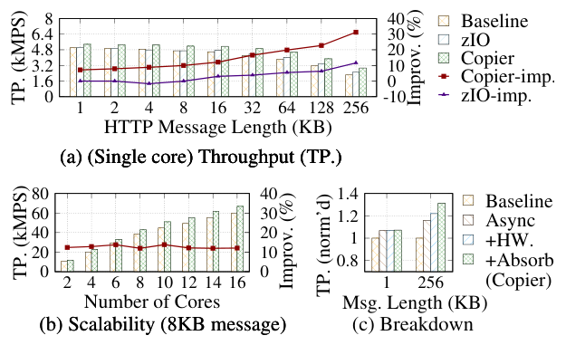
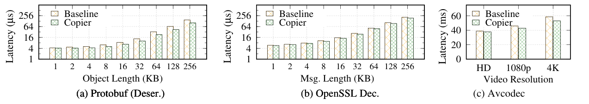
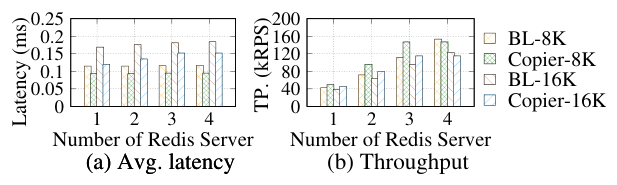

How to Copy Memory? Coordinated Asynchronous Copy as a First-Class OS Service
This page was written by an AI model to give a high-level overview of the paper. Please check the paper for detail: ACM Digital Library.
Memory copy is one of those costs that never seems to go away. It shows up in syscalls (crossing the user/kernel privilege boundary), in IPC (crossing address spaces), and inside carefully optimized applications that still copy data to reorganize buffers or bridge semantic gaps. The paper's own measurements find copy consuming up to 66.2% of CPU cycles in representative Linux apps and libraries (Redis, zlib, OpenSSL, Nginx, libpng, ffmpeg), and other work has reported 4 to 5% of all cycles in Google's datacenters going to copy. On HarmonyOS smartphones, copy accounts for 3 to 49% of cycles across scenarios such as camera recording, music playback, and browsing.
Two existing strategies fall short. Hardware acceleration (SIMD such as AVX, on-chip DMA) exists but is split: user-mode code can use SIMD but not privileged DMA, while the kernel avoids SIMD because saving and restoring its register state costs several KB per use, and ordinary apps cannot easily issue DMA, which needs privileged MMIO access. Zero-copy (page remapping or memory sharing) avoids the copy entirely but has narrow applicability: it needs page-aligned buffers, is vulnerable to Time-of-Check-to-Time-of-Use (TOCTTOU) attacks when kernel operations on a shared buffer stay visible to the app, cannot cheaply support multiple data replicas, and only pays off above a size threshold (Linux zero-copy send() needs payloads ≥10KB, and zIO, the prior state of the art, needs copies ≥16KB). That threshold matters because most real traffic is smaller: the paper's trace analysis finds 95.1% of Twitter memcached requests ≤10KB and 69.8% of AliCloud block-service requests between 4 and 10KB.
The paper's key move is to stop treating copy as a library function and instead make it a first-class OS service, called Copier. This follows from two observations. First, a dedicated OS service can fully exploit hardware (both SIMD and DMA, for both apps and kernel) and has a global view across all pending copies, enabling it to eliminate redundant intermediate copies that no single caller could see on its own. Second, programs typically copy data in bulk but consume it piece by piece in a regular pattern, leaving a Copy-Use window between when data finishes copying and when it is first used; the paper measures this window as commonly 2 to 10 times the duration needed to perform the copy itself, which is enough slack to move the copy off the critical path.
Mechanically, Copier gives clients (apps or kernel services) queue-based abstractions: a Copy Queue for submitting async copy tasks and a Sync Queue for raising the priority of specific data when it is needed sooner. Copies are tracked at the granularity of fixed-size segments so clients can start using the first part of a copy before the rest finishes. A background Copier thread executes the queued work using a piggyback-based dispatcher that runs DMA and AVX copy in parallel (instead of burning CPU cycles waiting for DMA), and performs layered copy absorption that merges a chain of copies (e.g., kernel-to-buffer, then buffer-to-destination) into one, skipping data that was never touched. Clients call amemcpy() to submit an async copy and csync() to guarantee the data is ready before using it; the paper proves this pair is semantically equivalent to a plain memcpy() call via a rely-guarantee simulation argument.
Built as Copier-Linux (on Linux 5.15.131) and integrated experimentally into HarmonyOS 5.0, Copier delivers up to a 1.8x latency speedup for Redis over the unmodified baseline and up to 1.6x over zIO, the prior state of the art for copy efficiency. It also reduces send()/recv() syscall latency, Android Binder IPC latency, copy-on-write fault handling time, TinyProxy throughput, and the latency of Protobuf deserialization, OpenSSL decryption, zlib compression, and on-device video decoding, all measured on server CPUs (Xeon E5-2650 v4) or a Huawei Mate 60 Pro smartphone (Kirin 9000S, HarmonyOS 5.0).

Key takeaways
- Copy stays expensive system-wide (up to 66.2% of cycles in some apps, 4-5% of datacenter cycles) despite decades of optimization, because much of it crosses privilege or address-space boundaries, where prior optimizations are hardest to apply.
- Existing fixes trade off badly: hardware features (SIMD, DMA) are each usable by only one side of the kernel/user boundary, and zero-copy needs page alignment and only pays off for large transfers (≥10 to 16KB), while most real traffic is smaller.
- The Copy-Use window, the gap between finishing a copy and first using the data, is commonly 2 to 10x the copy's own duration, giving Copier room to hide copy latency behind other work without changing correctness.
- As an OS service, Copier can fully exploit SIMD and DMA for every client, and uses its global view of pending copies to eliminate redundant intermediate ones (copy absorption) across privilege and address-space boundaries, something no single caller-side library can do.
- Copier-Linux yields up to 1.8x latency improvement for Redis over baseline and 1.6x over zIO; smaller but consistent gains appear across syscalls, Binder IPC, CoW fault handling, TinyProxy, Protobuf, OpenSSL, zlib, and HarmonyOS video decoding.
From a library call to an OS service
Why copy stays expensive, the Copy-Use window that makes async copy possible, Copier's queues and dependency tracking, its hardware dispatcher and copy absorption, and how it is implemented.
1 · Why copy resists elimination
The paper splits copy into two kinds. Intra-boundary copy (same address space, same privilege level) persists for reasons like organizing memory (Redis copies a SET's key and value into fresh buffers to avoid protocol-induced fragmentation), bridging semantic gaps (userspace network stacks concatenate packets into a contiguous message in recv()), and multi-replica requirements (a copy-on-write handler must produce a second copy of a page). Inter-boundary copy (cross-privilege or cross-address-space, e.g., during recv() or IPC) is harder to remove because it usually needs OS support or app/OS co-design.
| System | Insight | Target | No alignment needed | Cross-privilege | Cross-address-space | No blocking | Absorbs copy |
|---|---|---|---|---|---|---|---|
| U-mode memcpy (SIMD) | New hardware features | Apps | ✓ | ✗ | ✗ | ✗ | ✗ |
| K-mode memcpy (ERMS) | Hardware without state costs | Kernel | ✓ | ✓ | ✓ | ✗ | ✗ |
| L4 | Temporary mapping | IPC | ✓ | ✗ | ✓ | ✗ | Partial |
| Zero-copy socket | Shared pages | ≥10KB sockets | ✗ | ✓ | ✗ | ✓ | ✗ |
| Linux sendfile | Address transfer in kernel | Copying files | ✓ | ✓ | ✗ | ✗ | Partial |
| splice/vmsplice | Page moving, no copy | Pipes | ✗ | ✓ | ✓ | ✓ | ✗ |
| Arrakis | Hardware demultiplexing | I/O | ✓ | ✓ | ✗ | ✓ | ✗ |
| XRP | Offloading logic to kernel | Storage | ✓ | ✓ | ✗ | ✗ | ✓ |
| zIO | No unnecessary copy | Copy ≥16KB | Partial | ✗ | ✗ | ✓ | ✓ |
| Fastmove | DMA to save CPU cost | NVM storage (OS) | ✓ | ✓ | ✓ | ✗ | ✗ |
| Copier | Async copy as OS service | Kernel/apps ≥0.5KB | ✓ | ✓ | ✓ | ✓ | ✓ |
No prior system in this landscape combines alignment-free usability, cross-privilege and cross-address-space coverage, non-blocking execution, and copy absorption at once. Copier's row is the only one that checks every column.
2 · Measuring where the cycles go

The paper quantifies copy's cost directly. On Linux servers, copy (user-mode plus kernel-mode) consumes up to 66.2% of cycles across Redis SET/GET, zlib, OpenSSL, Nginx, libpng, and ffmpeg at 16KB and 256KB payload sizes, measured with perf. On HarmonyOS smartphones, copy's share ranges from 3 to 19% across camera recording, music playback, home-screen swiping, and keyboard input, and reaches 49% for a browser I/O scenario. This establishes that, despite decades of hand-tuned optimization in these apps, copy remains a dominant, not residual, cost.
3 · The Copy-Use window: why async copy is viable

For async copy to help, the copied data must not be needed the instant the copy finishes. The paper measures the gap (the Copy-Use window) between completing a copy and first touching the data, across kernel send(), HTTPS decryption (ChaCha20-Poly1305, AES-GCM), Redis, zlib compression, Binder IPC, Protobuf, and PNG decoding, each with 16KB payloads. The root cause the paper identifies: programs copy data in bulk but consume it piece by piece in fixed access patterns, e.g., in Protobuf, after recv() copies data to userspace, the CPU must update socket state, return to userspace, initialize a deserializing context, and deserialize the preceding 8KB before it ever touches the byte at the 8KB mark. Across the measured cases the window is typically 2 to 10 times the time needed to copy the corresponding data, which is the slack Copier's asynchrony exploits. See the Evaluation tab for how this translates into measured latency reductions.
4 · Queue-based abstractions and the programming model
Each client (a process, or the kernel acting on a process's behalf) gets three per-client queues mapped into its address space: a Copy Queue, a Sync Queue, and a Handler Queue. A background Copier thread polls these queues and executes the work. Two high-level primitives sit on top:
- amemcpy(dst, src, n, handler) enqueues an async Copy Task. It can carry a function pointer (a KFUNC for kernel code, a UFUNC for user code) to run automatically once the copy completes, e.g., to free the source buffer, replacing ad hoc ownership-tracking schemes used by prior zero-copy designs.
- csync(addr, len) blocks only until the specified range is ready, then returns. It is inserted following four guidelines: before directly reading/writing the destination or writing the source, before freeing a buffer (if no handler is used), before passing a buffer to an external library/function, and before making a buffer visible to another, unmodified thread.
To avoid completing tasks strictly in submission order (which would cause head-of-line blocking when an early task is not urgently needed), Copier partitions each Copy Task into fixed-size segments tracked by a bitmap descriptor, so a client can observe partial progress and start consuming early segments. If a client needs a not-yet-ready range sooner, it submits a Sync Task to the Sync Queue, which promotes that range's priority, giving Copier out-of-order execution without sacrificing correctness.
5 · Keeping async copy correct: dependency tracking

Reordering and splitting copies across privilege levels raises two correctness questions. Order dependency asks whether a kernel-submitted task (e.g., A→B during recv()) must finish before a later user-submitted task (B→C after recv() returns). Copier tracks this with Barrier Tasks: the kernel records a marker into the user queue before submitting its own first Copy Task after a trap, and another marker before returning to userspace, giving Copier a precise window of kernel tasks that must precede specific user tasks. Data dependency asks whether two Copy Tasks touch overlapping memory; Copier establishes this by walking tasks in the tracked order and comparing source/destination ranges, which is what lets a Sync Task safely reorder work and lets copy absorption (next section) decide which source actually holds the freshest data.
6 · Harmonizing CPU and DMA with a piggyback dispatcher
DMA copies without consuming CPU cycles but is slower than AVX2 per byte, especially for small transfers, and submitting a DMA task plus waiting for it to finish wastes cycles that could otherwise copy data directly. Copier addresses this with hybrid subtasks: within a Copy Task, it treats only subtasks above roughly 1.4KB (the point where DMA's submission overhead is repaid, and which also must be made of physically contiguous pages) as DMA candidates, running others on AVX. Scheduling happens in rounds: for large tasks (≥12KB) it picks DMA subtasks from within the task (i-piggyback); for smaller tasks it pools subtasks from several adjacent, non-dependent queued tasks (e-piggyback). DMA subtasks are submitted to the device queue first, AVX subtasks execute in parallel on the CPU, and DMA completion is confirmed last, so DMA copy overlaps with AVX copy instead of stalling the CPU. An Address Transfer Cache (ATCache) caches virtual-to-physical translations for DMA, exploiting the observation that apps like Redis reuse the same buffer addresses more than 75% of the time.
7 · Eliminating redundant copies: layered absorption
When data moves through several buffers in sequence (e.g., Redis copies a SET's value from the kernel buffer to an I/O buffer, then from the I/O buffer into the database) and only part of an intermediate buffer is ever touched, the untouched portion's copy is wasted work; copy absorption merges the chain into a single "short-circuit" copy. Because Copier tracks copy status at segment granularity, a naive single-source merge is unsafe if part of the intermediate buffer was modified after being copied into. Copier's layered absorption instead copies each segment from whichever source holds the latest version, determined by the segment's descriptor bits. Clients can further mark a task as a Lazy Copy Task, which Copier executes only if something later depends on it or a timeout elapses, useful when data is moved but not accessed (e.g., a proxy forwarding a message it never reads in full); a client can also explicitly abort a still-queued task it no longer needs.
8 · Fairness, isolation, and safe fault handling
- Copier threads poll client queues (built on Linux io_uring with SQPOLL), supporting a default NAPI-style polling mode and a scenario-driven mode that sleeps when no target workload is active, used on smartphones for energy efficiency; a thread auto-scaling mechanism adds or sleeps threads to keep load between configured bounds.
- Resource isolation extends Linux cgroups with a
copiercontroller whose unit is copy length (bytes copied), not CPU time, since completion time for the same length can vary with cache and TLB state. - Scheduling follows a CFS-like policy: each Copier thread tracks each process's total copy length served and preferentially serves the process with the least so far, with an administrator-configurable maximum copy length per scheduling round.
- Proactive fault handling avoids switching Copier's own page table to clients' virtual addresses (costly, and hard to fault-handle safely). Instead Copier consults VMAs and page tables up front to confirm a task's addresses are mapped, locks the mapping for the duration of the copy, and explicitly invokes fault handlers for unmapped pages or drops the task and signals the process (as a normal segfault would) if it is unresolvable or violates a security check.
Section 4.6 of the paper also bounds where Copier helps: it is most beneficial for kernel copies ≥0.3KB and userspace copies ≥0.5KB (where Copy-Use windows exist), and for even smaller windows it still helps large copies through hardware exploitation alone (kernel ≥2KB, userspace ≥12KB), e.g., CoW. It targets regular, largely sequential access patterns; random-access consumers see less benefit, and since Copier polls, it can cost extra CPU cycles that matter most when all cores are already saturated (quantified in the Evaluation tab).
9 · Implementation: Copier-Linux and the toolchain
Copier-Linux is built on Linux 5.15.131. Besides the core service, the authors provide a toolchain to ease adoption: libCopier exposes both high-level APIs (amemcpy/amemmove/csync/csync_all, with per-process default queues and a descriptor pool to speed up task submission) and low-level APIs for frameworks that manage their own descriptors or per-thread queues. CopierSanitizer, built on AddressSanitizer's shadow-memory technique, marks a copy's source/destination as "inaccessible" until a matching csync runs, catching omitted or misplaced csync calls at development time. CopierGen, an LLVM/MLIR-based compiler pass, automates inserting csync calls for simple cases like array accesses, with complex cases (e.g., pointer passing) left as future work.
| Level | API | Description |
|---|---|---|
| libCopier (high) | amemcpy/amemmove | Async memcpy/memmove using the process's default queues |
| libCopier (high) | csync(addr, size) | Ensures a prior async copy to that range has finished |
| libCopier (high) | csync_all() | Ensures all pending async copies and handlers have finished |
| libCopier (high) | shm_descr_bind | Binds a descriptor (in shared memory) to a shared-memory region |
| libCopier (low) | _amemcpy/_amemmove | Customized descriptor, handler, and lazy-copy management |
| libCopier (low) | _csync | Customized descriptor management; fd=-1 uses default queues |
| OS (syscall) | copier_create_mapped_queue | Creates a client with user+kernel queues, mmapped for the user |
| OS (syscall) | copier_create_queue, set_copier_opt, copier_awaken | Creates Copier queues, sets global parameters, wakes a sleeping thread |
10 · Correctness guarantee
The paper formally argues that, once csync is inserted per the four guidelines above, the behavior of code using amemcpy/csync contextually refines the behavior of the same code using plain memcpy, for both single- and multi-threaded programs. The proof uses a rely-guarantee-based simulation (RGSim): it models amemcpy as a byte-by-byte loop that appends to a per-address list of pending values (rather than overwriting in place), models csync as truncating that list to its latest value, and shows that every step of the async version has a matching step in the sync version that preserves a consistency relation between their memory states. The practical conclusion is that Copier introduces no new bugs relative to memcpy as long as csync is placed correctly, which is also what CopierSanitizer checks for at runtime.
Evaluation
Microbenchmarks of raw copy and syscall performance, then application-level results for Redis, TinyProxy, libraries, and HarmonyOS, and finally multi-tenant resource contention.
Server experiments run on machines with two Intel Xeon E5-2650 v4 CPUs at a constant 2.9GHz and 128GB DDR4 memory, with baselines on Linux 5.15.131 (the same kernel Copier-Linux is based on); the paper notes that later Linux versions still use the same ERMS-based copy, so this remains a representative kernel baseline. Smartphone experiments run on a Huawei Mate 60 Pro (Kirin 9000S CPU, HarmonyOS 5.0). In every experiment Copier is given one dedicated core for copying.
| What | Value in the paper |
|---|---|
| Platform (server) | 2x Xeon E5-2650 v4 @ 2.9GHz, 128GB DDR4, Linux 5.15.131 |
| Platform (phone) | Huawei Mate 60 Pro, Kirin 9000S, HarmonyOS 5.0 |
| Workloads | Redis SET/GET, TinyProxy HTTP forwarding, Protobuf deserialization, OpenSSL AES-GCM decryption, zlib deflate, send()/recv(), Android Binder IPC, CoW page-fault handling, Avcodec video decoding |
| Baselines | Unmodified Linux syscalls/apps, glibc AVX2 memcpy, kernel ERMS and DMA copy, Userspace Bypass (UB), zIO, Linux zero-copy socket, io_uring and io_uring with batching |
| Metrics | Copy throughput (GB/s), average and P99 latency, throughput (kMPS/kRPS), CPI, frame-drop rate, energy consumption |
Raw copy throughput beats both kernel and userspace baselines

What it shows. A benchmark submits a steady stream of Copy Tasks of varying length per task and measures completion throughput, comparing Copier (AVX2+DMA in parallel) against glibc's AVX2 memcpy, the kernel's ERMS copy, and raw DMA alone, under two conditions: no buffer repetition, and 75% buffer repetition (repeated use of the same source/destination addresses, which lets ATCache's cached translations help).
What to take from it. With no repetition, Copier's throughput is up to 158% higher than ERMS (55% at 4KB) and up to 38% higher than AVX2 alone (33% at 4KB). With 75% repetition, the gains over ERMS and AVX2 are up to 63% and 32% respectively (53% and 30% at 4KB), and ATCache itself contributes a further 2 to 11% throughput increase by cutting address-translation overhead. This establishes that parallelizing AVX2 and DMA via piggybacking, not just picking the faster of the two, is what drives the gain.
Syscall, IPC, and fault-handling latency drop even without application changes to logic

What it shows. Average latency of send() and recv() syscalls under an echo server/client workload, comparing the Linux baseline, Userspace Bypass (UB), io_uring, io_uring with batching (IOR-b), Copier, Copier combined with batching, and (for send only) Linux's zero-copy send(), across data sizes from 1KB to 256KB. Zero-copy recv() is not evaluated because it needs specialized NIC support the test setup lacks.
What to take from it. Copier reduces send() latency by 7 to 37% versus the baseline and by 27 to 59% when combined with io_uring batching; it reduces recv() latency by 16 to 92%, and 55 to 93% with batching. Zero-copy send() only beats Copier for large payloads (≥32KB), and brings little benefit below that while adding ownership-management complexity; plain io_uring does not reduce syscall execution latency on its own, only the surrounding batching does, and that benefit itself shrinks as data size grows for unmodified syscalls. Separately (without a dedicated figure), the paper reports Copier cutting Android Binder IPC end-to-end latency by 9.6 to 35.5% across message counts of 10 to 800, and cutting average copy-on-write fault-handling thread-blocking time by 71.8% for 2MB pages and 8.0% for 4KB pages.
Redis SET/GET: the headline application result

What it shows. Average latency of Redis GET and SET across value sizes from 1KB to 256KB, generated by the official redis-benchmark tool with 8 parallel closed-loop clients on Redis v6.2.14, comparing the unmodified baseline, UB, zIO, Linux zero-copy send, and Copier. Copier optimizes five copies in Redis's request path: kernel-to-I/O-buffer in recv(), I/O-buffer-to-value-buffer on SET, value-buffer-to-I/O-buffer on GET, I/O-buffer-to-kernel in send(), and an internal processing copy, plus moving page faults off the critical path via proactive fault handling.
What to take from it. Compared with the baseline, Copier reduces average end-to-end latency by 2.7 to 43.4% for SETs and 4.2 to 42.5% for GETs, reduces P99 tail latency by 5.9 to 33.4% (SETs) and 5.59 to 47.8% (GETs), and improves throughput by 2.4 to 50.0% (SETs) and 4.2 to 32.0% (GETs); the paper's headline 1.8x figure corresponds to the best of these latency points. UB only helps at ≤4KB because it otherwise slows memory access; zIO gets up to 20.0% on GETs but, because Redis always reuses its input buffer (triggering page faults for zIO), only helps SETs at ≥64KB (up to 6.1%); improvement for SETs diminishes above 64KB in general because request-sending overhead starts to dominate. Linux zero-copy send() only pays off at values ≥32KB due to its alignment and ownership-management costs.
TinyProxy: copy absorption across three hops collapses into one

What it shows. TinyProxy v1.11.1 throughput (in thousands of messages per second) forwarding HTTP messages between echo servers and clients, across message sizes 1KB to 256KB on a single core, plus a scalability sweep across core counts for 8KB messages (on Xeon Gold 6238R CPUs), and a breakdown decomposing Copier's gain into async copy, hardware exploitation, and copy absorption, each added incrementally. TinyProxy only needs the request line and headers to make its forwarding decision, so the body's intermediate copy can be fully absorbed.
What to take from it. Copier increases throughput by 7.2 to 32.3% over baseline; zIO reaches up to 11.6% but can only remove one userspace copy (not the cross-boundary ones) and, because it relies on page remapping, only helps messages ≥16KB that occupy whole pages. The breakdown shows async copy alone accounts for most of the gain on small messages (1KB, since they fully overlap with other work), while for large, hard-to-fully-overlap messages (256KB) hardware exploitation and copy absorption each contribute materially. Copier scales to 16 threads with over 130K tasks submitted per queue per second thanks to its lock-free queue design.
Libraries and HarmonyOS: the overlap benefit generalizes beyond networking

What it shows. Average latency versus object/message size for Protobuf deserialization (v4.23.0) and OpenSSL SSL_read() with AES-GCM decryption (v3.4.0), comparing baseline and Copier; separately, decoding latency per frame for HarmonyOS's Avcodec framework across HD/1080p/4K resolutions on the Huawei Mate 60 Pro, using 300-second production decoding benchmarks.
What to take from it. Copier overlaps the copy with deserialization/decryption/compression, cutting average latency by up to 33% for Protobuf, 8.4% for OpenSSL (stable above 16KB, the maximum TLS record size, since larger messages are split into multiple records anyway), and up to 10% for Avcodec; a separate zlib deflate_fast() measurement (not pictured here) shows up to an 18.8% speedup compressing data under 256KB. On the phone, the per-frame decoding latency reduction of 3 to 10% comes with only a 0.07 to 0.29% increase in energy consumption, thanks to Copier's scenario-driven polling (active only when copy-intensive work is detected), and translates into up to a 22% reduction in dropped frames during video playback.
Under full core contention, Copier still wins on latency but can cost throughput for copy-light apps

What it shows. Redis SET average latency and throughput with the total system limited to 4 cores, incrementally adding Redis instances (each with 8 parallel clients) until all cores are saturated, for 8KB and 16KB values, baseline versus Copier. (At 4 Redis instances, at most 3 run simultaneously under Copier since it reserves a core for copying.)
What to take from it. While idle cores remain, Copier improves both latency and throughput. Once all cores are fully utilized, Copier still reduces request latency (by 18.8% for 8KB values and 17.4% for 16KB), but overall throughput drops slightly (4.3% for 8KB, 6.5% for 16KB) because some cycles now go to task submission and polling instead of serving more client connections. The paper notes this tradeoff is specific to copy-light, throughput-bound apps: for apps with longer copy chains or larger copies, where hardware exploitation and absorption save more cycles than polling consumes, throughput still improves even under full contention, e.g., TinyProxy at 16 fully used cores gains 7.7% throughput.
FAQ
Q·What problem is Copier actually solving?▾
Memory copy, the plain act of duplicating bytes from one buffer to another, remains a major CPU cost across operating systems and applications even after decades of optimization, because much of it crosses privilege levels (user to kernel) or address spaces (process to process), where the usual tricks (SIMD, zero-copy) don't fully apply. Copier makes copy an OS service so it can be done asynchronously, with full hardware support, and with a global view that can eliminate redundant copies.
Q·How is this different from "zero-copy" techniques I've heard of?▾
Zero-copy (page remapping, shared memory) tries to avoid copying at all. It works well for large transfers but needs page-aligned buffers, complicates who "owns" a buffer and when it is safe to reuse it, can be attacked via Time-of-Check-to-Time-of-Use races, and only pays off above roughly 10 to 16KB. Copier still copies the data, it just does the copy asynchronously, overlapped with other work, and as efficiently as possible, which helps at sizes as small as 0.5KB (userspace) or 0.3KB (kernel) where zero-copy doesn't help at all.
Q·What is the "Copy-Use window" and why does it matter so much?▾
It's the time between when a copy finishes and when the program first actually reads or writes that data. The paper measured this gap across several real apps and kernel paths and found it is typically 2 to 10 times longer than the copy itself takes, because programs tend to copy in bulk but process the data incrementally afterward (updating state, returning from a syscall, parsing a header, and so on). That gap is exactly the room Copier uses to run the copy in the background instead of on the critical path.
Q·Do I have to rewrite my application to use Copier?▾
You replace memcpy-style calls with amemcpy() and add csync() before the data is actually used, freed, or passed to code that doesn't know about Copier. The paper reports this took 14 to 94 lines of code changes across the 10 apps and OS services it evaluated, 1 to 2 days for simple libraries and 1 to 2 weeks for complex apps like Redis, aided by a bug-detection tool (CopierSanitizer) that flags missing or misplaced csync calls.
Q·How does Copier guarantee it won't introduce new bugs?▾
The authors give a formal proof, using a technique called rely-guarantee-based simulation, that a program using amemcpy/csync (following four stated placement rules) behaves identically, in both single- and multi-threaded settings, to the same program using ordinary memcpy. In plain terms: if csync is placed correctly, amemcpy can't cause a new bug that memcpy wouldn't also have avoided.
Q·What is "copy absorption" and when does it kick in?▾
When data passes through a chain of buffers, kernel buffer to I/O buffer to final destination, and most of an intermediate buffer is never actually read, copying into that intermediate buffer at all is wasted work. Copy absorption merges the whole chain into one direct copy, skipping the untouched middle step. Because Copier tracks copy progress in fine-grained segments, it only does this safely for the segments it can prove weren't modified in between, taken from whichever buffer holds the newest data for each segment.
Q·Why can't the kernel just use AVX/SIMD for its own copies today?▾
Using SIMD registers requires saving and restoring their state, which can amount to several KB per use, an overhead the Linux kernel judged not worth paying for ordinary copy calls. Because Copier runs as its own dedicated service with its own thread, it saves and restores that state only once per activation (not once per copy), which is what lets it offer SIMD-accelerated copy to kernel code as well as to apps.
Q·Why combine DMA and AVX instead of just picking the faster one?▾
DMA copies without using CPU cycles but has lower throughput than AVX2, especially for small transfers, and waiting for a DMA job to finish wastes cycles that AVX could have used to copy. Copier's dispatcher instead runs them at the same time: it hands large, contiguous chunks to DMA and the rest to AVX, timed so both finish around the same point, so neither unit sits idle waiting on the other.
Q·Does polling for work waste CPU, especially on a phone?▾
It can. On servers, Copier defaults to NAPI-style polling, reasonable when some cores are underutilized (common in datacenters), but the paper shows that under full core contention this polling overhead can shrink overall throughput for copy-light, throughput-bound apps even though it still helps their latency. On smartphones, where battery life matters, Copier instead uses scenario-driven polling: its thread sleeps unless a target copy-intensive scenario is actively detected, keeping the measured energy overhead to 0.07 to 0.29%.
Q·How does Copier compare to prior work like zIO?▾
zIO, the paper's main point of comparison, is a userspace-only, page-fault-triggered zero-copy mechanism that also observes most copied data goes unused; it needs page remapping and so only helps at sizes ≥16KB. Copier instead actually performs the copy (asynchronously), works across privilege and address-space boundaries, and absorbs redundant intermediate copies at fine granularity, which is why it beats zIO by up to 1.6x on Redis and handles copies as small as 0.5KB.
Q·Could this become a hardware feature instead of an OS service?▾
The authors think so and discuss it as future work: a hardware primitive for async copy could cut the CPU cycles currently spent polling. They note that AI accelerators already have domain-specific async-copy hardware (e.g., GPU tensor memory accelerators, NPU memory transfer engines), but these are tailored to tensor workloads and don't fit the general, varied copy patterns CPUs see. No such hardware version of Copier is built or measured in this paper.
Q·Is Copier secure against the kind of attacks that hurt zero-copy designs?▾
The paper argues yes: zero-copy's TOCTTOU risk comes from the kernel's writes to a shared buffer staying visible (and thus alterable) to the app before a check completes. Copier avoids sharing ownership; instead it copies data into a private buffer and only lets the client check or act on it once the copy is complete, so there is no window where an untrusted party can modify data being checked by the kernel.